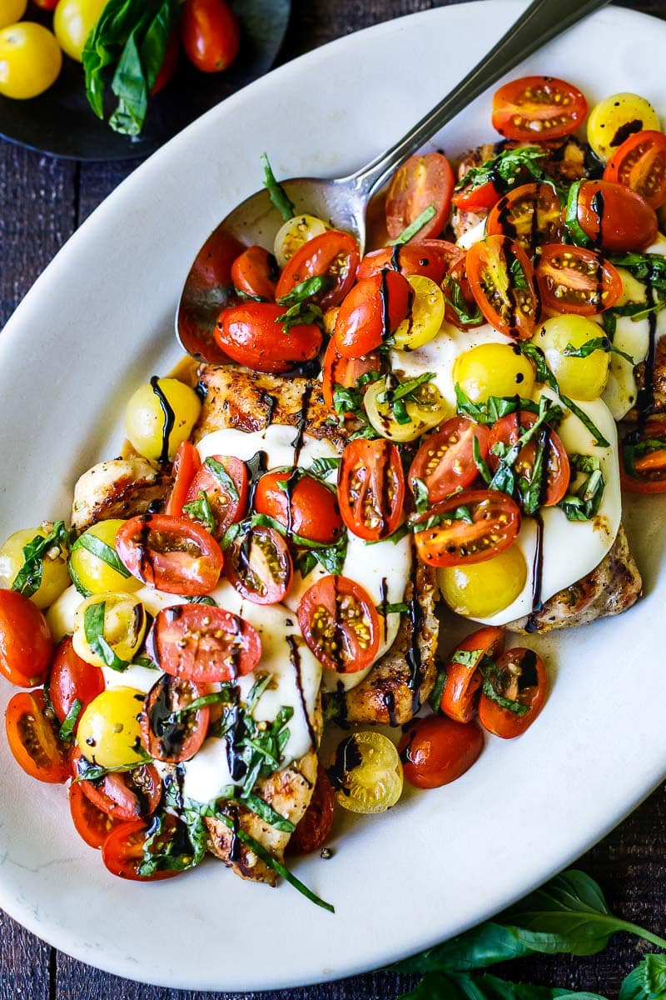

It's officialy warm outside & In the summer, I naturally want meals that feel lighter, fresher, and easier. I love recipes with lots of fruits and vegetables because they taste good, feel balanced, and don’t require a ton of effort. This page highlights some of the kinds of meals I actually like making when the weather is warm.

One of my favorite warm-weather meals is a caprese sandwich because it feels fresh, filling, and easy at the same time. It is one of those recipes that tastes like summer without requiring a long grocery list or a lot of cooking.
During the summer, I usually want food that feels colorful and refreshing instead of super heavy. Meals with fruits and vegetables are perfect because they are easy to throw together and still feel satisfying. I also like that recipes like wraps, salads, and pasta salads are flexible, so you can use whatever ingredients you already have.
Another reason I like these recipes is because they are realistic for college life. They don’t require complicated steps, and many of them can be made ahead of time for busy days. Overall, these are the kinds of meals that make cooking feel easy, healthy, and enjoyable.